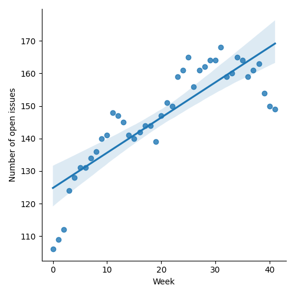
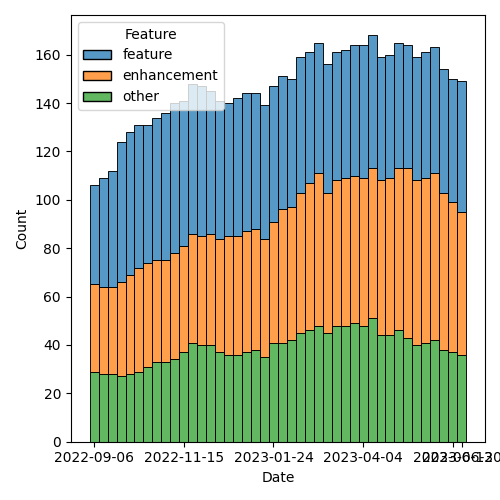

QT4 CG Meeting 040 Minutes 2023-06-27
Table of Contents
Agenda index / QT4CG.org / Dashboard / GH Issues / GH Pull Requests
Draft Minutes
Summary of new and continuing actions [0/6]
[ ]QT4CG-002-10: BTW to coordinate some ideas about improving diversity in the group[ ]QT4CG-016-08: RD to clarify how namespace comparisons are performed.[ ]QT4CG-026-01: MK to write a summary paper that outlines the decisions we need to make on “value sequences”- This is related to PR #368: Issue 129 - Context item generalized to context value and subsequent discussion.
[ ]QT4CG-029-01: RD+DN to draft spec prose for the “divide and conquer” approach outlined in issue #399[ ]QT4CG-029-07: NW to open the next discussion of #397 with a demo from DN See PR #449[ ]QT4CG-039-01: NW to schedule discussion of issue #52, Allow record(*) based RecordTests
1. Administrivia
1.1. Roll call [9/10]
Regrets MSM.
[X]Reece Dunn (RD)[X]Sasha Firsov (SF)[X]Christian Grün (CG)[X]Joel Kalvesmaki (JK) [0:06-][X]Michael Kay (MK)[X]John Lumley (JL)[X]Dimitre Novatchev (DN)[X]Ed Porter (EP)[ ]C. M. Sperberg-McQueen (MSM)[X]Norm Tovey-Walsh (NW). Scribe. Chair.
1.2. Accept the agenda
Proposal: Accept the agenda.
Accepted.
1.2.1. Status so far…

Figure 1: “Burn down” chart on open issues

Figure 2: Open issues by specification

Figure 3: Open issues by type
1.3. Approve minutes of the previous meeting
Proposal: Accept the minutes of the previous meeting.
Accepted.
1.4. Next meeting
The next meeting is scheduled for Tuesday, 4 July 2023.
Regrets from SF, ED, DN. Anticipated regrets from MSM and JK.
Proposal: cancel the meeting on 4 July.
Accepted.
The next meeting is scheduled for Tuesday, 11 July 2023.
No regrets heard for 11 July.
Accepted.
Reminder: the CG will take a vacation for four weeks in August. We will not meet on 1, 8, 15, or 22 August.
1.5. Review of open action items [0/6]
[ ]QT4CG-002-10: BTW to coordinate some ideas about improving diversity in the group[ ]QT4CG-016-08: RD to clarify how namespace comparisons are performed.[ ]QT4CG-026-01: MK to write a summary paper that outlines the decisions we need to make on “value sequences”- This is related to PR #368: Issue 129 - Context item generalized to context value and subsequent discussion.
[ ]QT4CG-029-01: RD+DN to draft spec prose for the “divide and conquer” approach outlined in issue #399[ ]QT4CG-029-07: NW to open the next discussion of #397 with a demo from DN See PR #449[ ]QT4CG-039-01: NW to schedule discussion of issue #52, Allow record(*) based RecordTests
1.6. Review of open pull requests and issues
The following editorial or otherwise minor PRs were open when this agenda was prepared. The chair proposes that these can be merged without discussion.
- PR #569 Minor editorial corrections, XDM chh. 1, 2
- PR #568 Issue #567 - schema for xslt40
- PR #562 361: Named arguments: $input vs. $value
Proposal: Accept these PRs.
MK made a proposal to fix the argument name in parse-uri, CG agrees
and will update the PR.
Accepted with that amendment.
It has been proposed that the following issues be closed without action.
- Issue #457 Support parsing numeric, alphabetic, and additive number systems. Feature
- Issue #175 In XQuery, allow a semicolon at the end of the module Enhancement
- Issue #106 Decorators' support Discussion
Proposal: Close these issues.
Accepted.
2. Technical Agenda
2.1. PR #529: 528: revision of json(), and renaming to xdm-to-json()
See PR #529
MK reviews the PR.
- MK: I’m going to start with 15.5.
- … Although we hav a function called
xml-to-jsonit doesn’t do what users expect. It only converts a very limited vocabulary. - … Let’s argue about the name later!
- … Goal: be possible represent any XDM content in JSON.
- … Produce JSON that’s “intuitive and easy to use” not necessarily reflecting every nuance of the XML.
- … Produce consistent and stable JSON, small changes in the input shouldn’t make large changes in the output. (Adding an attribute shouldn’t, for example, have a large change on the output.)
- … The conversion is not lossless, there’s compromise and sacrifice.
- … Although we hav a function called
- RD: Would it make sense to allow some customization?
- MK: Yes, there’s a lot of customization. Wait just a bit longer!
- MK discussses 15.5.1, JSON element layouts.
- MK: Layouts for any given element can be chosen in various ways.
- … explicit, from the schema, defaulted, uniform across the data
- MK: Using schema information gives you a little more information, more than just what’s in the instance.
Section 15.5.1.1 lists a number of possible layouts.
- RD: With the various functions that take a map or an XML object, it
would be useful if those accepted the JSON output from this
conversion. There’s a discrepancy here between what
fn:serializewould do with the map and what’s proposed here wrt property names when namespaces are used. - MK: Yes, let’s look at the detail of that and see if we can make it work.
- RD: It would be interesting and possibly useful to support JSON-LD as an output type. That would let you pass in RDF-XML and get JSON-LD out.
- MK: Is that JSON-lines?
- RD: No, it’s JSON linked data.
- NW: That sounds like a different function to me…
MK returns to the rules for property names.
- RD: How does that work for attributes?
- MK: Attributes are different. You always use EQName syntax for attributes in a namespace.
NW asks about adding “[1]” to the key name rather than making the result an array.
- MK: It’s only used for record layout. It avoids changing the output for the case where only one or two values are duplicated.
- CG: Can’t we use an array?
- MK: Yes, but they might not be next to each other and you want them to be ordered.
MK returns to the examples.
- MK: I tried it on a fragment of grammar, and it worked pretty well if the schema is used.
MK moves to 15.2.5, the function itself.
- MK: It returns a string. That’s debatable, since you might immediately parse it.
MK reviews the options.
- MK: The rules that follow describe how to map atomic values and other edge cases. Then the error cases.
- DN: I admire this is a huge effort and there’s a lot here.
- … I’m not sure I’d use this. It seems too complicated. I would probably use XML serialization or other methods that I have in my programming language, for example C#. That saves me from knowing all the details about the layouts.
- … The objective that small changes in the input shouldn’t cause large changes in the output is misleading. Some large changes would produce no changes at all, for example.
- … For namespace names, it seems to me that if an XML document uses elements in many namespaces, the results would not be very readble. I would think to something like prefixes; you could have a special section in the output that describes the prefix mapping.
- … The idea of using different layouts is really great. The user will be happy if they find the layout that suits them.
- MK: There are a lot of questions there. One of the key points is
that this is designed to hide complexity. In common cases, it should
produce “the right thing” by default. Most users won’t need to
understand the complexities in order to get the output they need.
- … That includes handling of namespaces. It’s trying to handle common cases intuitively. The common cases are no namespaces, one namespace, or an envelope namespace with a different content namespace.
- … You can always transform first to get XML that will produce the output you want.
- … It’s trying to do an 80/20 rule. But as you say, that’s subjective. I’ve tried it on quite a few examples from other tools and it evolved to handle those examples well.
- DN: I’m still not sure I’d use this.
- MK: That’s fair. Whether you want very specific JSON or just “any” JSON depends a lot.
- DN: For me, serializing into C# is going to be easiest.
- JL: The spec lists all the layouts from the simplest to most complicated. Will the last one handle everything?
- MK: Yes.
- JL: It might be better if they were listed in the other order, showing simplifications rather than building up from the simple cases.
- MK: Maybe. I think from a pedagogic point of view, there’s benefit in showing simple cases first.
- JL: If some of these layouts are matched by the implementation against certain cases, then am I going to end up with an output where the JSON format will be very dependent on the input?
- MK: Part of my thinkink here is that people who are going to use this function are probably doing it because they have data that works reasonably well in JSON.
MK reviews the rules used to select a layout pattern from an input.
It seems likely that the rules could be drawn out more clearly.
- CG: I like the function. I have concerns that we introduce new
features instead of first aligning existing features. Most users
today use the serialize function with the JSON method. When we have
basic input like sequences or arrays the output already differs.
- … I was wondering if it’s possible to get the same output with serialize. If not, we have to explain it carefully.
- … Could we pass these options to the JSON output method. We might be able to use the existing serialize function instead of creating a new function.
- MK: That’s a good point. Obviously serialize currently does some very different things with nodes. It doesn’t convert XML trees to JSON trees. But having said that, there’s certainly an overlap. We can certainly look for better commonality and/or have a section that explains how they differ.
Some discussion of how serialize and this function differ.
- CG: It would be nice if you could use options on serialize.
- RD: Could we have a layout name that is “does what
serializecurrently does?” - MK: Yes, we might be able to do that.
- JK: An excellent proposal. The previous version seemed to talk more about whitespace normalization; that’s something that probably needs to be covered.
- DN: I think the name of the function should be
json-projection.
MK will make another pass based on the feedback from today.
- MK: Do I read the group correctly that this approach is a good way to go overall?
Thumbs up and general nods of agreement.
3. Any other business?
None heard.